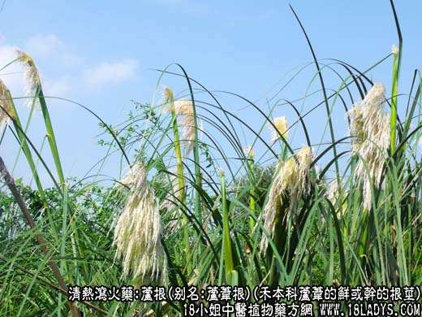
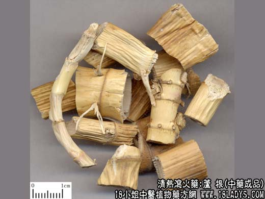
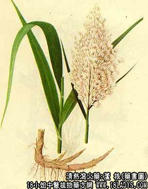

本品为常用中药。《名医别录》列为下品。
别名：芦苇根。
来源：为禾本科多年生高大直立草本芦苇的鲜或干的根茎。
产地：全国各地的池沼地、河溪边、湖边、池塘两岸、砂地、湿地等多有野生。
性状鉴别：鲜芦根呈长圆筒状，表面黄白色或牙白色，有光泽。有节，节上有残根及牙痕。质轻而韧，不易折断。断面中空，周边黄白色，厚约2毫米，有排列成环的小孔，外皮疏松，可剥离。气无味甘。以色白、条粗而匀，有光泽无须根者为佳。
干芦苇呈扁圆形。表面光泽，黄白色。节处较硬，显红黄色，有纵皱纹。质轻而绵软。余同上。
功效与作用：清热、生津，主要为清肺热、胃热。
炮制：切段。
性味：甘寒。
归经：入肺，胃经。
功能：清热除烦，止呕。
主治：烦渴，呕吐反胃；鲜用表疹，清肺热。
临床应用：1、用于清肺热（咳吐稠痰、咽疼、身热烦躁或有鼻衄）。在治疗上呼吸道炎、急性支气管炎、肺炎、肺脓疡的方剂中，芦根很常用。桑菊饮、银翘散都用芦根，取其清热、甘润作用。至于苇茎汤，更是治疗肺痈（肺脓疡）的常用方剂，如再加鱼腥草、桔梗、川贝等，效力更显著。
2、用于清胃热。热病极期或后期，只要有身热烦渴，舌燥少津、心烦、大便干结等，就可在清热方剂内加入芦根（鲜芦根更好）。至于治疗由胃热而致的呕吐、反胃、呃逆、口臭口渴、舌红而干等证候（大概相当于急性胃炎），可用芦根配竹茹、生姜等，方如芦根清胃饮。
使用注意：有畏寒或便溏者不宜用。
用量：15～60g。